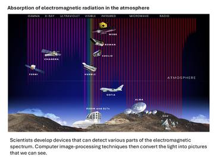
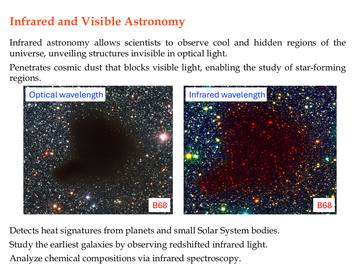
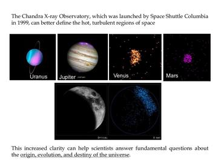
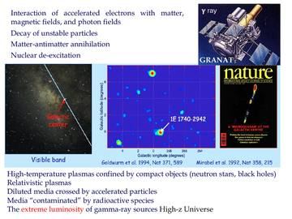
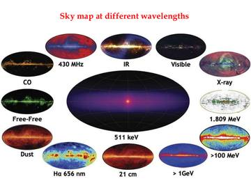
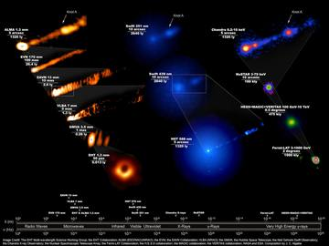

L1 Multiwavelength AstronomyL1 Thiên văn đa bước sóng
Start hereBắt đầu › L1
The same object looks different in radio, infrared, visible, X-ray and gamma light, because each band is made by different physics. We need all of them to understand an object, and we must go to space for the bands the atmosphere absorbs. This lecture has almost no formulas: learn to recognise bands, observatories and examples.Cùng một vật thể trông khác nhau ở sóng radio, hồng ngoại, khả kiến, tia X và gamma, vì mỗi dải do một loại vật lý khác tạo ra. Cần mọi dải để hiểu một vật thể, và phải lên không gian để quan sát những dải mà khí quyển hấp thụ. Bài này gần như không có công thức: hãy nhớ cách nhận ra dải sóng, đài quan sát và ví dụ.
L1 23 slide pages · 3 formulas · 25 practice questions23 trang slide · 3 công thức · 25 câu luyện tập · Practice this lectureLuyện bài này
Memory hooksMẹo nhớ
Bands at a glanceCác dải trong một bảng
| BandDải | What it showsCho thấy gì | Observatories on the slidesĐài quan sát trên slide | Example on the slidesVí dụ trên slide |
|---|---|---|---|
| Radio, microwaveRadio, vi sóng | cold gas, CMBkhí lạnh, CMB | COBE, WMAP, Planck; ALMA, SKA (ground)COBE, WMAP, Planck; ALMA, SKA (mặt đất) | Penzias and Wilson 1965Penzias và Wilson 1965 |
| InfraredHồng ngoại | cool regions behind dust, star formation, exoplanet atmospheresvùng lạnh sau bụi, tạo sao, khí quyển ngoại hành tinh | JWST, Spitzer, Herschel; SOFIA; VISTA, KeckJWST, Spitzer, Herschel; SOFIA; VISTA, Keck | B68, WASP-39 b, TarantulaB68, WASP-39 b, Tarantula |
| VisibleKhả kiến | stars, galaxies as the eye sees themsao, thiên hà như mắt thấy | Hubble (space); Rubin and ELTs (ground)Hubble (không gian); Rubin và ELT (mặt đất) | M51, Hydra A (optical)M51, Hydra A (quang học) |
| UltravioletTử ngoại | hot young stars (not detailed on the slides)sao trẻ nóng (slide không nêu chi tiết) | none namedkhông nêu | M51 at ~10 nmM51 ở ~10 nm |
| X-rayTia X | gas heated to millions of degrees, black-hole surroundingskhí nóng hàng triệu độ, vùng quanh lỗ đen | Chandra, XMM-Newton, IXPE, XRISMChandra, XMM-Newton, IXPE, XRISM | Hydra A, planets and the MoonHydra A, các hành tinh và Mặt Trăng |
| GammaGamma | annihilation, decays, extreme particle acceleratorshủy cặp, phân rã, máy gia tốc hạt cực đoan | FERMI, INTEGRAL, SWIFT, GRANATFERMI, INTEGRAL, SWIFT, GRANAT | 1E 1740-2942, GRB 0809161E 1740-2942, GRB 080916 |
The electromagnetic spectrumPhổ điện từ
- Wavelength (m) on the slide: radio 10³, microwave 10⁻², infrared 10⁻⁵, visible 0.5×10⁻⁶, ultraviolet 10⁻⁸, X-ray 10⁻¹⁰, gamma 10⁻¹². Frequency axis from 10⁴ to 10²⁰ Hz. [L1 p2]Bước sóng (m) trên slide: radio 10³, vi sóng 10⁻², hồng ngoại 10⁻⁵, khả kiến 0,5×10⁻⁶, tử ngoại 10⁻⁸, tia X 10⁻¹⁰, gamma 10⁻¹². Trục tần số từ 10⁴ đến 10²⁰ Hz. [L1 tr.2]
- Scale of the wavelength: buildings (radio) → butterflies (microwave) → needle point (infrared) → protozoans (visible) → molecules (UV) → atoms (X-ray) → atomic nuclei (gamma). [L1 p2]Kích thước cỡ bước sóng: tòa nhà (radio) → bướm (vi sóng) → đầu kim (hồng ngoại) → động vật nguyên sinh (khả kiến) → phân tử (tử ngoại) → nguyên tử (tia X) → hạt nhân (gamma). [L1 tr.2]
- Eyes see only a tiny part. Example band centres for the galaxy M51: X-ray ≤ 1 nm, UV ~10 nm, visible ~500 nm, infrared ~10 µm, millimetre ~1 mm, radio ≥ 10 cm. [L1 p3]Mắt chỉ thấy một phần rất nhỏ. Dải ví dụ cho thiên hà M51: tia X ≤ 1 nm, tử ngoại ~10 nm, khả kiến ~500 nm, hồng ngoại ~10 µm, milimét ~1 mm, radio ≥ 10 cm. [L1 tr.3]
- Each object emits different kinds of light depending on its age, composition and temperature; the bands are complementary. [L1 p3]Mỗi vật thể phát ra các loại ánh sáng khác nhau tùy tuổi, thành phần và nhiệt độ; các dải bổ sung cho nhau. [L1 tr.3]


The atmosphere absorbs most bandsKhí quyển hấp thụ phần lớn các dải
- Gamma, X-ray, UV and much of the infrared are absorbed; the visible and radio windows reach the ground. (read from the figure) [L1 p4]Gamma, tia X, tử ngoại và phần lớn hồng ngoại bị hấp thụ; cửa sổ khả kiến và radio tới được mặt đất. (đọc từ hình) [L1 tr.4]
- Above the atmosphere: WEBB, ROMAN, EUCLID, CHANDRA, FERMI, HUBBLE. Airborne: SOFIA. On the ground: ALMA, RUBIN and ELTs, SKA. [L1 p4]Trên khí quyển: WEBB, ROMAN, EUCLID, CHANDRA, FERMI, HUBBLE. Trên máy bay: SOFIA. Trên mặt đất: ALMA, RUBIN và các ELT, SKA. [L1 tr.4]
- Computer image processing turns the detected light into pictures we can see. [L1 p4]Xử lý ảnh bằng máy tính biến ánh sáng thu được thành hình ảnh nhìn thấy. [L1 tr.4]

Radio and microwave: the CMBRadio và vi sóng: nền vi sóng vũ trụ
- Most famous for mapping the Cosmic Microwave Background (CMB). [L1 p5]Nổi tiếng nhất là lập bản đồ nền vi sóng vũ trụ (CMB). [L1 tr.5]
- The CMB was found by chance by Penzias and Wilson (1965) while they studied noise in a radio antenna. [L1 p5-6]CMB được phát hiện tình cờ bởi Penzias và Wilson (1965) khi họ khảo sát nhiễu trong một ăng-ten radio. [L1 tr.5-6]
- Space missions confirmed and detailed it: COBE (1992), WMAP (2003), Planck (2013). Ground observations are limited by atmospheric disturbance and artificial illumination. [L1 p5-6]Các sứ mệnh vũ trụ xác nhận và chi tiết hóa: COBE (1992), WMAP (2003), Planck (2013). Quan sát mặt đất bị giới hạn bởi nhiễu khí quyển và ánh sáng nhân tạo. [L1 tr.5-6]


Infrared and visibleHồng ngoại và khả kiến
- Infrared sees cool, hidden regions and penetrates cosmic dust that blocks visible light: the dark cloud B68 is black in optical but shows stars in infrared. [L1 p7]Hồng ngoại thấy vùng lạnh, bị che; nó xuyên qua bụi vũ trụ chắn ánh sáng khả kiến: đám mây tối B68 đen ở quang học nhưng lộ sao ở hồng ngoại. [L1 tr.7]
- Uses: heat signatures of planets and small bodies; earliest galaxies (redshifted infrared); chemical composition by infrared spectroscopy; star-forming regions. [L1 p7]Công dụng: dấu nhiệt của hành tinh và vật thể nhỏ; thiên hà sớm nhất (hồng ngoại bị dịch đỏ); thành phần hóa học bằng quang phổ hồng ngoại; vùng tạo sao. [L1 tr.7]
- Space: JWST (revealed the atmosphere of the exoplanet WASP-39 b), Spitzer (detailed image of star formation in the Tarantula Nebula), Herschel. [L1 p8]Trong không gian: JWST (cho thấy khí quyển ngoại hành tinh WASP-39 b), Spitzer (ảnh chi tiết vùng tạo sao Tinh vân Tarantula), Herschel. [L1 tr.8]
- Airborne and ground: SOFIA, VISTA, Keck, and many more telescopes. [L1 p9-10]Máy bay và mặt đất: SOFIA, VISTA, Keck và nhiều kính khác. [L1 tr.9-10]



X-ray astronomyThiên văn tia X
- X-rays are produced when matter is heated to millions of degrees: strong magnetic fields, extreme gravity or explosive forces. [L1 p11]Tia X sinh ra khi vật chất bị nung tới hàng triệu độ: từ trường mạnh, trọng lực cực lớn hoặc lực nổ. [L1 tr.11]
- Chandra (launched 1999 on Space Shuttle Columbia) defines hot, turbulent regions: Hydra A in optical and X-ray; matter as close as 90 km from the event horizon of a stellar black hole. [L1 p11-12]Chandra (phóng 1999 bằng tàu con thoi Columbia) xác định vùng nóng, hỗn loạn: Hydra A ở quang học và tia X; vật chất cách chân trời sự kiện của lỗ đen sao tới 90 km. [L1 tr.11-12]
- Solar-System X-ray images: Uranus, Jupiter, Venus, Mars, the Moon (optical vs X-ray). Greater clarity helps answer questions about the origin, evolution and destiny of the universe. [L1 p12-18]Ảnh tia X trong Hệ Mặt Trời: Thiên Vương, Mộc, Kim, Hỏa, Mặt Trăng (quang học so với tia X). Độ nét cao hơn giúp trả lời câu hỏi về nguồn gốc, tiến hóa và số phận vũ trụ. [L1 tr.12-18]
- Other X-ray missions: XMM-Newton (1999), IXPE (2021), XRISM (2023), Aditya-L1 (the slide says 2024). [L1 p19]Các sứ mệnh tia X khác: XMM-Newton (1999), IXPE (2021), XRISM (2023), Aditya-L1 (slide ghi 2024). [L1 tr.19]



Gamma-ray astronomyThiên văn tia gamma
- Four ways to make gamma rays: accelerated electrons interacting with matter, magnetic and photon fields; decay of unstable particles; matter-antimatter annihilation; nuclear de-excitation. [L1 p20]Bốn cách tạo gamma: electron được gia tốc tương tác với vật chất, từ trường và trường photon; phân rã hạt không bền; hủy cặp vật chất - phản vật chất; khử kích thích hạt nhân. [L1 tr.20]
- Sources: hot plasma around compact objects (neutron stars, black holes), relativistic plasma, media contaminated by radioactive species, extremely luminous sources at high redshift. Example: 1E 1740-2942 near the Galactic centre (GRANAT; Mirabel 1992, Goldwurm 1994). [L1 p20]Nguồn: plasma nóng quanh vật thể đặc (sao neutron, lỗ đen), plasma tương đối tính, môi trường nhiễm đồng vị phóng xạ, nguồn cực sáng ở dịch chuyển đỏ lớn. Ví dụ: 1E 1740-2942 gần tâm Ngân Hà (GRANAT; Mirabel 1992, Goldwurm 1994). [L1 tr.20]
- Missions: FERMI, INTEGRAL, SWIFT; gamma-ray burst GRB 080916; Fermi saw a gamma-ray halo near the Galactic centre that could be a dark-matter signal (news item). [L1 p21]Sứ mệnh: FERMI, INTEGRAL, SWIFT; chớp gamma GRB 080916; Fermi thấy quầng gamma gần tâm Ngân Hà có thể là tín hiệu vật chất tối (tin trên slide). [L1 tr.21]


All-sky maps and one object in many bandsBản đồ toàn trời và một vật thể ở nhiều dải
- All-sky maps at different wavelengths: radio 430 MHz, IR, visible, X-ray, 1.809 MeV, > 100 MeV, > 1 GeV, 21 cm, Hα 656 nm, dust, free-free, CO, 511 keV. [L1 p22]Bản đồ toàn trời ở các bước sóng khác nhau: radio 430 MHz, IR, khả kiến, tia X, 1,809 MeV, > 100 MeV, > 1 GeV, 21 cm, Hα 656 nm, bụi, free-free, CO, 511 keV. [L1 tr.22]
- The 511 keV line is the electron rest energy: m_e c² = 0.511 MeV [calc], the signature of electron-positron annihilation (slide p20 lists annihilation).Vạch 511 keV bằng năng lượng nghỉ của electron: m_e c² = 0,511 MeV [tính], dấu hiệu của hủy cặp electron - positron (slide tr.20 nêu hủy cặp).
- The last slide combines one jet-producing source (it looks like M87; read from the figure) from radio (EHT 1.3 mm, ALMA, VLBA) through optical (HST) and X-ray (Chandra, NuSTAR) to gamma (Fermi-LAT, HESS, MAGIC, VERITAS); wavelength axis 10² to 10⁻²⁰ m. [L1 p23]Slide cuối ghép một nguồn có jet (trông như M87; đọc từ hình) từ radio (EHT 1,3 mm, ALMA, VLBA) qua quang học (HST) và tia X (Chandra, NuSTAR) tới gamma (Fermi-LAT, HESS, MAGIC, VERITAS); trục bước sóng 10² đến 10⁻²⁰ m. [L1 tr.23]


Formulas explained, symbol by symbolCác công thức, giải thích từng ký hiệu
Click 'next symbol' (or a symbol, or a row): it lights up in the formula and its meaning, unit, implication and numbers appear. Each card shows how the formula is derived, a worked example and the usual mistakes. Cards marked 'not on the slides' are standard physics added here and checked in Python.Bấm 'ký hiệu kế tiếp' (hoặc một ký hiệu, hoặc một hàng): ký hiệu sáng lên trong công thức và hiện ý nghĩa, đơn vị, hệ quả và số liệu. Mỗi thẻ có cách suy ra, ví dụ có số và lỗi thường gặp. Thẻ ghi 'không có trên slide' là vật lý chuẩn được thêm vào và kiểm trong Python.
| SymbolKý hiệu | Name [unit]Tên [đơn vị] | MeaningÝ nghĩa | What it impliesHệ quả | Numbers assignedSố gán |
|---|---|---|---|---|
| frequencytần số [Hz = s⁻¹] | Number of wave crests that pass a point each second.Số đỉnh sóng đi qua một điểm mỗi giây. | Higher ν = shorter λ = more energetic light.ν cao hơn = λ ngắn hơn = ánh sáng mang năng lượng lớn hơn. | 500 nm → 6.0×10¹⁴ Hz; 10 µm → 3.0×10¹³ Hz; 1 nm → 3.0×10¹⁷ Hz; 10³ m → 3.0×10⁵ Hz (the slide axis is rounded)500 nm → 6,0×10¹⁴ Hz; 10 µm → 3,0×10¹³ Hz; 1 nm → 3,0×10¹⁷ Hz; 10³ m → 3,0×10⁵ Hz (trục slide đã làm tròn) | |
| speed of lighttốc độ ánh sáng [m s⁻¹] | The same for every band in vacuum.Như nhau cho mọi dải trong chân không. | 2.998×10⁸ m/s = 3.0×10¹⁰ cm/s2,998×10⁸ m/s = 3,0×10¹⁰ cm/s | ||
| wavelengthbước sóng [m] | Distance between two crests.Khoảng cách giữa hai đỉnh sóng. | The slide scale: radio 10³ m, microwave 10⁻², infrared 10⁻⁵, visible 0.5×10⁻⁶, ultraviolet 10⁻⁸, X-ray 10⁻¹⁰, gamma 10⁻¹² m.Thang trên slide: radio 10³ m, vi sóng 10⁻², hồng ngoại 10⁻⁵, khả kiến 0,5×10⁻⁶, tử ngoại 10⁻⁸, tia X 10⁻¹⁰, gamma 10⁻¹² m. |
In plain wordsNói bằng lời dễ hiểu
Think of a conveyor belt that always moves at speed c. If the crests are close together (short λ), many of them pass a fixed point each second (large ν); if they are far apart (long λ), few pass. So λ and ν are two ways of describing the same light, and the long and short ends of the L1 spectrum are the same wave at two extremes.Hãy nghĩ tới băng chuyền luôn chạy với tốc độ c. Nếu các đỉnh sóng sát nhau (λ ngắn) thì mỗi giây có nhiều đỉnh đi qua một điểm cố định (ν lớn); nếu chúng xa nhau (λ dài) thì ít đỉnh đi qua. Vậy λ và ν là hai cách mô tả cùng một ánh sáng, và hai đầu của phổ L1 là cùng một loại sóng ở hai thái cực.
How it is derivedSuy ra từng bước
- In one period T the wave moves one wavelength: c = λ / T.Trong một chu kỳ T sóng đi được một bước sóng: c = λ / T.
- The frequency is the inverse of the period, ν = 1/T, hence c = λ ν.Tần số là nghịch đảo của chu kỳ, ν = 1/T, do đó c = λ ν.
Check the unitsKiểm tra đơn vị
(m)(1/s) = m/s: speed ✓. Check: 500 nm × 6×10¹⁴ Hz = 3×10⁸ m/s ✓.(m)(1/s) = m/s: tốc độ ✓. Kiểm: 500 nm × 6×10¹⁴ Hz = 3×10⁸ m/s ✓.
Worked exampleVí dụ có số
Green light, λ = 500 nm = 5.0×10⁻⁷ m: ν = 3.0×10⁸ / 5.0×10⁻⁷ = 6.0×10¹⁴ Hz. The slide axis puts visible light at ~10¹⁵ Hz: a rounded position.Ánh sáng lục, λ = 500 nm = 5,0×10⁻⁷ m: ν = 3,0×10⁸ / 5,0×10⁻⁷ = 6,0×10¹⁴ Hz. Trục slide đặt khả kiến ở ~10¹⁵ Hz: vị trí đã làm tròn.
What if... (feel the formula)Nếu... thì... (cảm nhận công thức)
- Halve λ and ν doubles.Giảm λ một nửa thì ν gấp đôi.
- Radio 10³ m ↔ 3×10⁵ Hz (300 kHz); gamma 10⁻¹² m ↔ 3×10²⁰ Hz: the two ends of the L1 p2 axis are 15 orders of magnitude apart in wavelength and in frequency.Radio 10³ m ↔ 3×10⁵ Hz (300 kHz); gamma 10⁻¹² m ↔ 3×10²⁰ Hz: hai đầu trục L1 tr.2 cách nhau 15 bậc độ lớn cả về bước sóng lẫn tần số.
Common mistakesLỗi thường gặp
- Mixing units (nm, µm, m) before dividing.Trộn đơn vị (nm, µm, m) trước khi chia.
- Believing that a higher frequency means a longer wavelength.Tưởng tần số cao hơn nghĩa là bước sóng dài hơn.
Test yourselfTự kiểm tra
Cover the right side: from λ = 21 cm, what is ν and which band is it?Che vế phải: từ λ = 21 cm, ν là bao nhiêu và thuộc dải nào?
Show the formulaHiện công thức
Practice problems for this lectureBài tập tương tự của bài này →
| SymbolKý hiệu | Name [unit]Tên [đơn vị] | MeaningÝ nghĩa | What it impliesHệ quả | Numbers assignedSố gán |
|---|---|---|---|---|
| photon energynăng lượng photon [J or eV] | Energy of one photon.Năng lượng của một photon. | 1 eV = 1.602×10⁻¹⁹ J.1 eV = 1,602×10⁻¹⁹ J. | 500 nm → 2.48 eV; 10 µm → 0.124 eV; 1 nm → 1.24 keV; 1 pm → 1.24 MeV; the electron rest energy m_e c² = 511.0 keV (the 511 keV map, L1 p22)500 nm → 2,48 eV; 10 µm → 0,124 eV; 1 nm → 1,24 keV; 1 pm → 1,24 MeV; năng lượng nghỉ của electron m_e c² = 511,0 keV (bản đồ 511 keV, L1 tr.22) | |
| Planck constanthằng số Planck [J s] | Converts frequency to energy.Đổi tần số ra năng lượng. | 6.626×10⁻³⁴ J s = 4.136×10⁻¹⁵ eV s; hc = 1239.8 eV nm6,626×10⁻³⁴ J s = 4,136×10⁻¹⁵ eV s; hc = 1239,8 eV nm | ||
| frequencytần số [Hz] | See the wave relation.Xem hệ thức sóng. | |||
| speed of lighttốc độ ánh sáng [m s⁻¹] | (as defined on the previous cards)(như đã định nghĩa ở các thẻ trước) | |||
| wavelengthbước sóng [nm] | Use nm with the number 1239.8 to get eV directly.Dùng nm với số 1239,8 để ra eV trực tiếp. |
In plain wordsNói bằng lời dễ hiểu
Light comes in packets (photons). One photon of a short-wavelength light is a strong 'punch', one photon of radio is a feeble 'tap'. To make a high-energy photon the source must be hot or violent, which is why X-rays and gamma rays come from gas at millions of degrees, black-hole surroundings and annihilation.Ánh sáng đến theo gói (photon). Một photon bước sóng ngắn là một 'cú đấm' mạnh, một photon radio chỉ là một cái 'chạm' nhẹ. Để tạo photon năng lượng cao, nguồn phải nóng hoặc dữ dội, nên tia X và gamma đến từ khí hàng triệu độ, vùng quanh lỗ đen và hủy cặp.
How it is derivedSuy ra từng bước
- Planck and Einstein: a photon of frequency ν has energy E = hν [ext].Planck và Einstein: photon tần số ν có năng lượng E = hν [ngoài slide].
- Replace ν by c/λ: E = hc/λ.Thay ν bằng c/λ: E = hc/λ.
- Numerically hc = 1239.8 eV nm, so E (eV) = 1239.8 / λ (nm).Về số, hc = 1239,8 eV nm, nên E (eV) = 1239,8 / λ (nm).
Check the unitsKiểm tra đơn vị
J = (J s)(1/s) ✓. In eV: hc = 1239.8 eV nm, so nm → eV directly ✓ (500 nm → 2.48 eV).J = (J s)(1/s) ✓. Theo eV: hc = 1239,8 eV nm, nên nm → eV trực tiếp ✓ (500 nm → 2,48 eV).
Worked exampleVí dụ có số
X-ray, λ = 1 nm: E = 1239.8 eV = 1.24 keV. Gamma, λ = 10⁻¹² m = 1 pm: E = 1.24 MeV. Visible, 500 nm: 2.48 eV.Tia X, λ = 1 nm: E = 1239,8 eV = 1,24 keV. Gamma, λ = 10⁻¹² m = 1 pm: E = 1,24 MeV. Khả kiến, 500 nm: 2,48 eV.
What if... (feel the formula)Nếu... thì... (cảm nhận công thức)
- Halve λ and E doubles.Giảm λ một nửa thì E gấp đôi.
- From visible (500 nm, 2.48 eV) to X-ray (1 nm, 1239.8 eV): 500 times more energy per photon.Từ khả kiến (500 nm, 2,48 eV) tới tia X (1 nm, 1239,8 eV): năng lượng mỗi photon gấp 500 lần.
- The 511 keV line has λ = 1239.8 eV nm / 511 000 eV = 2.43 pm: that is why it appears in the gamma-ray maps (L1 p22).Vạch 511 keV có λ = 1239,8 eV nm / 511 000 eV = 2,43 pm: vì thế nó xuất hiện trong bản đồ gamma (L1 tr.22).
Common mistakesLỗi thường gặp
- Forgetting that eV and J differ by 1.6×10⁻¹⁹.Quên rằng eV và J khác nhau 1,6×10⁻¹⁹.
- Using nm in a formula that needs m.Dùng nm trong công thức cần m.
Test yourselfTự kiểm tra
Which has more energy per photon, 10 µm infrared or 500 nm visible, and by how much?Photon nào năng lượng lớn hơn, hồng ngoại 10 µm hay khả kiến 500 nm, và lớn hơn bao nhiêu lần?
Show the formulaHiện công thức
Practice problems for this lectureBài tập tương tự của bài này →
| SymbolKý hiệu | Name [unit]Tên [đơn vị] | MeaningÝ nghĩa | What it impliesHệ quả | Numbers assignedSố gán |
|---|---|---|---|---|
| peak wavelengthbước sóng cực đại [µm] | Wavelength at which a blackbody emits most per unit wavelength.Bước sóng mà vật đen phát nhiều nhất trên một đơn vị bước sóng. | 10 µm ↔ 290 K: why infrared sees cool objects (L1 p7).10 µm ↔ 290 K: vì sao hồng ngoại thấy vật lạnh (L1 tr.7). | Sun 5772 K → 0.50 µm; dense cloud 10 K → 290 µm; CMB 2.7255 K → 1.06 mm; 10⁶ K → 2.9 nmMặt Trời 5772 K → 0,50 µm; đám mây đặc 10 K → 290 µm; CMB 2,7255 K → 1,06 mm; 10⁶ K → 2,9 nm | |
| temperaturenhiệt độ [K] | Surface temperature of the emitter (blackbody approximation).Nhiệt độ bề mặt của vật phát (xấp xỉ vật đen). | Millions of degrees → X-rays (L1 p11).Hàng triệu độ → tia X (L1 tr.11). | Earth surface 288 K → 10.1 µmbề mặt Trái Đất 288 K → 10,1 µm | |
| Wien constanthằng số Wien [µm K] | A universal constant.Hằng số phổ quát. | 2897.8 µm K2897,8 µm K |
In plain wordsNói bằng lời dễ hiểu
Heat a poker: dull red, then orange, then white-blue. The colour of the glow moves to shorter wavelengths as the temperature rises. Wien's law is the exact version: peak wavelength × temperature = a constant. So the band in which an object shines tells you its temperature.Nung một thanh sắt: đỏ sẫm, rồi cam, rồi trắng xanh. Màu ánh sáng chuyển sang bước sóng ngắn hơn khi nhiệt độ tăng. Định luật Wien là phiên bản chính xác: bước sóng cực đại × nhiệt độ = hằng số. Vậy dải mà vật sáng cho biết nhiệt độ của nó.
How it is derivedSuy ra từng bước
- The Planck function B_λ(T) has a maximum at one wavelength [ext].Hàm Planck B_λ(T) có một cực đại ở một bước sóng [ngoài slide].
- Setting its derivative to zero gives λ_max T = b (checked here by maximising the function numerically: the two values agree to better than 0.2 %).Cho đạo hàm bằng không ta được λ_max T = b (đã kiểm ở đây bằng cách cực đại hóa hàm bằng số: hai giá trị khớp tốt hơn 0,2 %).
Check the unitsKiểm tra đơn vị
µm K / K = µm ✓. Check: 2898 / 290 = 10 µm ✓.µm K / K = µm ✓. Kiểm: 2898 / 290 = 10 µm ✓.
Worked exampleVí dụ có số
The CMB at 2.7255 K peaks at 1.06 mm, in the microwave band (L1 p5-6). Gas heated to 10⁶ K peaks at 2.9 nm, in the X-ray band (L1 p11).CMB ở 2,7255 K có cực đại ở 1.06 mm, trong dải vi sóng (L1 tr.5-6). Khí nung tới 10⁶ K có cực đại ở 2.9 nm, trong dải tia X (L1 tr.11).
What if... (feel the formula)Nếu... thì... (cảm nhận công thức)
- Double T and λ_max halves.Gấp đôi T thì λ_max giảm một nửa.
- The Sun (5772 K) peaks at 0.50 µm, in the visible band: our eyes use the light that the Sun gives most. Objects at room temperature (~290 K) peak near 10 µm: this is why infrared telescopes see cool objects (L1 p7).Mặt Trời (5772 K) cực đại ở 0,50 µm, trong dải khả kiến: mắt ta dùng đúng ánh sáng Mặt Trời cho nhiều nhất. Vật ở nhiệt độ phòng (~290 K) cực đại gần 10 µm: vì thế kính hồng ngoại thấy được vật lạnh (L1 tr.7).
- For a peak at the gamma wavelength 10⁻¹² m the temperature would be 2.9×10⁹ K: gamma rays are not thermal glow of ordinary gas, they come from particle processes (L1 p20).Để cực đại ở bước sóng gamma 10⁻¹² m thì nhiệt độ phải là 2,9×10⁹ K: tia gamma không phải ánh sáng nhiệt của khí thường, chúng đến từ các quá trình hạt (L1 tr.20).
Common mistakesLỗi thường gặp
- Using the law for non-thermal emission (gamma-ray bursts, synchrotron): it applies to thermal (blackbody) light only.Dùng định luật cho phát xạ không nhiệt (chớp gamma, synchrotron): nó chỉ áp dụng cho ánh sáng nhiệt (vật đen).
Test yourselfTự kiểm tra
Which band does a 10⁶ K gas cloud shine in, and why can't a ground telescope see it?Đám khí 10⁶ K sáng ở dải nào, và vì sao kính mặt đất không thấy được?
Show the formulaHiện công thức
Practice problems for this lectureBài tập tương tự của bài này →
Exercises of this lecture, to redo yourselfBài tập của bài này, để tự làm lại
The L1 slides contain no exercise and no question (all 23 pages were checked: the only line with the word questions, on p18, is a statement). The calculations below are for practice.Slide L1 không có bài tập hay câu hỏi nào (đã kiểm cả 23 trang: dòng duy nhất có chữ questions, ở tr.18, là một câu khẳng định). Các bài tính bên dưới để luyện tập.
Practice calculations (answers computed and checked)Bài tính luyện tập (đáp án đã tính và kiểm)
L1Practice calculationBài tính luyện tậpA radio telescope observes the 21 cm line. Find the frequency and the photon energy.Một kính radio quan sát vạch 21 cm. Tìm tần số và năng lượng photon.
Try it yourself first, then open the answer.Hãy tự làm trước, rồi mở đáp án.
Show the short answerHiện đáp án ngắn
Show the stepsHiện các bước
- ν = c/λ = 2.998×10⁸ / 0.21 = 1.43×10⁹ Hz.ν = c/λ = 2,998×10⁸ / 0,21 = 1,43×10⁹ Hz.
- E = 1239.8 eV nm / 2.1×10⁸ nm = 5.9×10⁻⁶ eV.E = 1239,8 eV nm / 2,1×10⁸ nm = 5,9×10⁻⁶ eV.
L1Practice calculationBài tính luyện tậpA gamma-ray photon has λ = 10⁻¹² m (L1 p2). What is its energy and what temperature would a blackbody have to peak there?Một photon gamma có λ = 10⁻¹² m (L1 tr.2). Năng lượng của nó là bao nhiêu và vật đen phải có nhiệt độ nào để cực đại ở đó?
Try it yourself first, then open the answer.Hãy tự làm trước, rồi mở đáp án.
Show the short answerHiện đáp án ngắn
Show the stepsHiện các bước
- E = 1239.8 eV nm / 10⁻³ nm = 1.24×10⁶ eV = 1.24 MeV.E = 1239,8 eV nm / 10⁻³ nm = 1,24×10⁶ eV = 1,24 MeV.
- Wien: T = 2898 µm K / 10⁻⁶ µm = 2.9×10⁹ K.Wien: T = 2898 µm K / 10⁻⁶ µm = 2,9×10⁹ K.
L1Practice calculationBài tính luyện tậpThe CMB is a blackbody of 2.7255 K. Where does it peak and in which band?CMB là vật đen 2,7255 K. Nó cực đại ở đâu và thuộc dải nào?
Try it yourself first, then open the answer.Hãy tự làm trước, rồi mở đáp án.
Show the short answerHiện đáp án ngắn
Show the stepsHiện các bước
- λ_max = 2898 µm K / 2.7255 K = 1063 µm = 1.06 mm.λ_max = 2898 µm K / 2,7255 K = 1063 µm = 1,06 mm.
- 1 mm is at the edge of the microwave band: the CMB is a microwave background (L1 p5).1 mm nằm ở rìa dải vi sóng: CMB là nền vi sóng (L1 tr.5).
Quick Q and AHỏi đáp nhanh
Why do astronomers observe at many wavelengths?Vì sao nhà thiên văn quan sát nhiều bước sóng?
Each band is produced by different physics (temperature, composition, age), so the observations are complementary. [L1 p3, p23]Mỗi dải do vật lý khác nhau tạo ra (nhiệt độ, thành phần, tuổi) nên các quan sát bổ sung cho nhau. [L1 tr.3, 23]
Why is B68 dark in the optical but not in the infrared?Vì sao B68 tối ở quang học mà không tối ở hồng ngoại?
Dust absorbs visible light; infrared passes through the dust and shows the stars behind. [L1 p7]Bụi hấp thụ ánh sáng khả kiến; hồng ngoại xuyên qua bụi và cho thấy các sao phía sau. [L1 tr.7]
Which bands need space telescopes?Dải nào cần kính vũ trụ?
Gamma, X-ray, UV and much of the infrared, because the atmosphere absorbs them; visible and radio mostly reach the ground. [L1 p4]Gamma, tia X, tử ngoại và phần lớn hồng ngoại, vì khí quyển hấp thụ; khả kiến và radio phần lớn tới mặt đất. [L1 tr.4]
How was the CMB discovered?CMB được phát hiện thế nào?
By chance: Penzias and Wilson were characterising noise in a radio antenna (1965); COBE, WMAP, Planck then mapped it. [L1 p5-6]Tình cờ: Penzias và Wilson đang khảo sát nhiễu trong ăng-ten radio (1965); sau đó COBE, WMAP, Planck lập bản đồ. [L1 tr.5-6]
Exam checklist: points you must mentionDanh sách ôn thi: các ý phải nêu
- Name the bands in order of wavelength and give the scale of each (L1 p2).Nêu các dải theo thứ tự bước sóng và kích thước của từng dải (L1 tr.2).
- Say why the atmosphere forces telescopes into space and which bands reach the ground (L1 p4).Nói vì sao khí quyển buộc kính lên không gian và dải nào tới mặt đất (L1 tr.4).
- One example and one observatory per band (table on this page).Một ví dụ và một đài quan sát cho mỗi dải (bảng ở trang này).
- Infrared sees through dust (B68), X-ray traces gas at millions of degrees (Hydra A), radio gave the CMB.Hồng ngoại xuyên bụi (B68), tia X lần theo khí hàng triệu độ (Hydra A), radio cho CMB.
- Gamma-ray processes: four of them (L1 p20).Các quá trình gamma: bốn quá trình (L1 tr.20).
- c = λν, E = hν, Wien: write the formula, units and one number.c = λν, E = hν, Wien: viết công thức, đơn vị và một con số.
Lecture slides of this module (use the arrow keys)Slide của module này (dùng phím mũi tên)
Self-check: 10 random questionsTự kiểm tra: 10 câu ngẫu nhiên
[L2 p9] = lecture L2, slide page 9. [calc] = computed here and checked in Python. [ext] = not on the slides.[L2 tr.9] = bài L2, trang slide 9. [tính] = tính ở đây và kiểm trong Python. [ngoài slide] = không có trên slide.